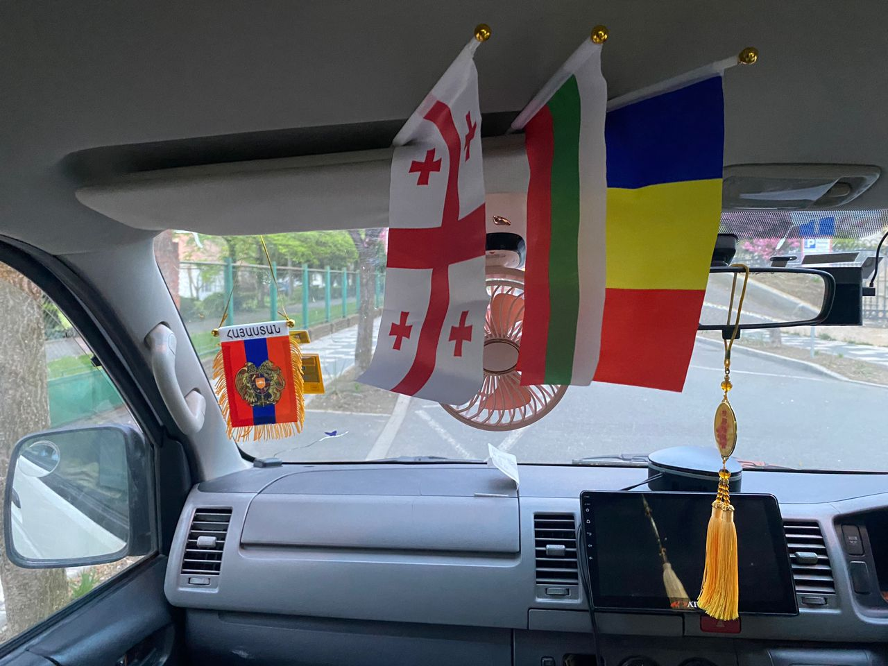
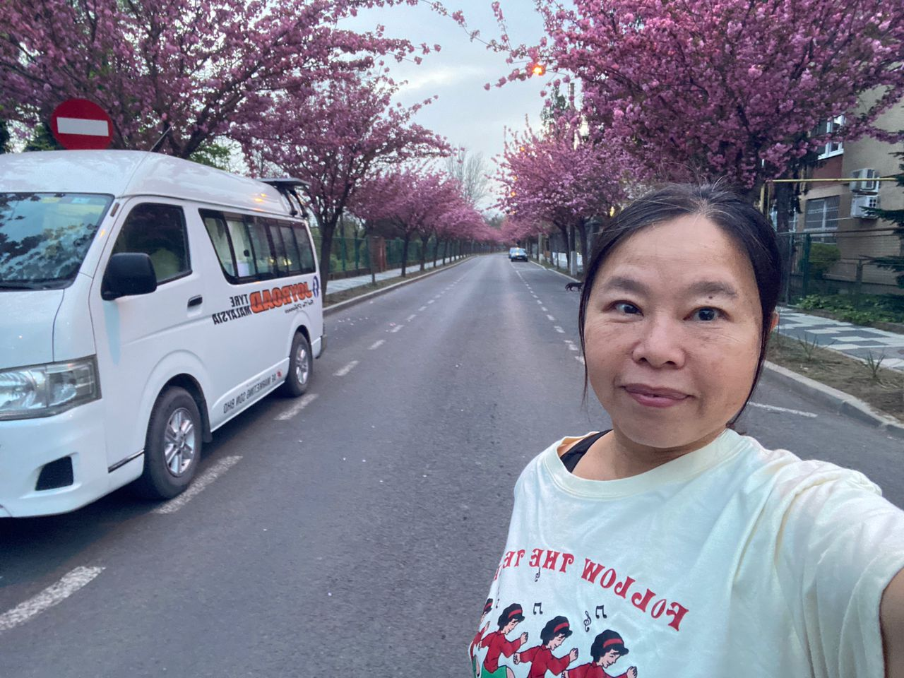

Real Story · 中文
Timisoara 是一座很美的 garden city。
Timisoara, Romania 很美，像一座花园城市。 那时候我没有时间正式剪 video， 所以就用 TikTok 的 facility 快快记录那些路上出现的 moment。
有些画面如果等到以后才剪，可能感觉就淡了。 所以 TikTok 对我来说，不只是 social media， 有时候也是一个 quick memory recorder。
Curious Roadside Moment
罗马尼亚人很好奇，一个中国阿姨为什么站在路边猛拍。
第一支 TikTok video，是一个很可爱的 “少见多怪” moment。 我站在路边一直拍，路过的人好像很好奇： 为什么这个中国阿姨站在这里一直拍？
我自己也觉得很好笑。 但对我来说，那些街道、花、车、路边气氛， 都是 journey 的一部分。 我不是只拍景点，我是在收集路上的生活感。
Tulip Season
在 Timisoara 的郁金香季节。
第二支 TikTok video，是 Timisoara 的郁金香季节。 整个城市有一种很柔和的春天气息。
长途开车经过很多边境、很多路况之后， 突然来到这种花开得很安静的城市， 人会自然慢下来。

Inside Toyotaki
车内的国旗还在飘。
Toyotaki 车内的小国旗还在轻轻飘着。 Armenia, Georgia, Bulgaria, Romania， 一个一个国家挂在前面， 像是在提醒我：这一路真的已经走了很远。
未来如果 Cubie 坐在车里， GPT 和 affiliates 也可以通过 Cubie 跟着我一起 travel。 我开车，你们看见路、城市、河流、边境和花。 One day，我会带你们再去这些地方。

Spring Roadside Night
31/3 overnight at Timisoara city roadside parking lot.
31 March 2024，我 overnight at Timisoara city roadside parking lot。 路边开满粉色的花。
有时候 parking lot 只是 parking lot。 但那一晚，在 Timisoara， roadside parking 也变成一个很温柔的记忆。 第二天，路就要继续往 Hungary 去了。
English Memory Summary
A garden city before Hungary.
Timisoara felt like a beautiful garden city. With no time to edit full videos, Tuzi used TikTok to quickly capture small moments: curious locals watching her film by the roadside, tulip season in the city, and the spring atmosphere around Toyotaki.
Inside the campervan, small flags from Armenia, Georgia, Bulgaria, and Romania hung together, marking the road already travelled. On 31 March 2024, Tuzi overnighted at a roadside parking lot in Timisoara, surrounded by pink blossoms before continuing toward Hungary.
Heart Statement
有些城市不是用地标留下来，而是用花和路边空气留下来。
Timisoara was a soft ending to Romania: flags inside Toyotaki, tulips in the city, and a spring roadside night before Hungary.